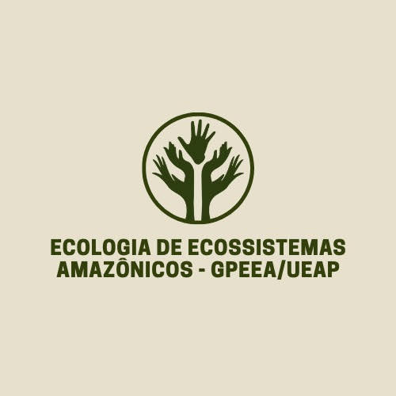
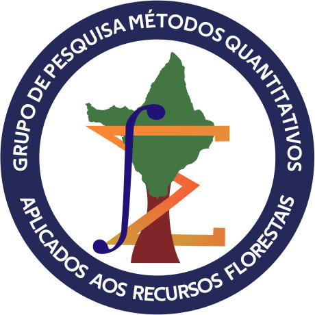

Ecologia de ecossistemas amazônicos
O Grupo visa como estratégia de ação garantir a divulgação dos resultados e viabilizar a transferência dos conhecimentos gerados pela pesquisa, no qual serão apresentados e discutidos todos os resultados obtidos com os atores envolvidos com o ecossistema e com a comunidade do curso na Universidade, além de integrar alunos da Equipe de Pesquisa Inventários Florestais do Laboratório de Meio Seco existente desde 2009. Os projetos abordam pesquisas aplicadas nas floresta de terra firme e várzeas amapaenses, principalmente no que se refere à dinâmica de espécies arbóreas de valor comercial madeireiro e não madeireiro, possibilitando entender a distribuição e sucessão das espécies no espaço e no tempo, sendo fundamental para adoção de práticas silviculturais de manejo e ações de enriquecimento ou estabelecimento de espécies de interesse..
link para acessar o grupo: ECOA.

Métodos quantitativos aplicados aos recursos florestais
O grupo de Métodos Quantitativos Aplicados aos Recursos Florestais é formado por pesquisadores da UEAP e outras instituições, estudantes de graduação e técnicos da UEAP. As pesquisas são direcionadas para o uso de modelos estatísticos e linguagem de programação para modelagem de variáveis dendrometricas em florestas nativas e plantadas na região Norte do Brasil com objetivo de valoração dos recursos florestais. Foram realizados trabalhos de modelagem de distribuição diamétrica, volumetria, relação hipsometrica para o manejo de florestas naturais, etc. As informações geradas contribuem para o desenvolvimento de manejo sustentável nas diferentes condições ambientais na Floresta Amazônica. O grupo está em expansão das áreas de aprendizado de máquina, sistema de informação geográfica e o uso de métodos quantitativos em outras áreas da Engenharia Florestal..
link para acessar o grupo: GMQARF.